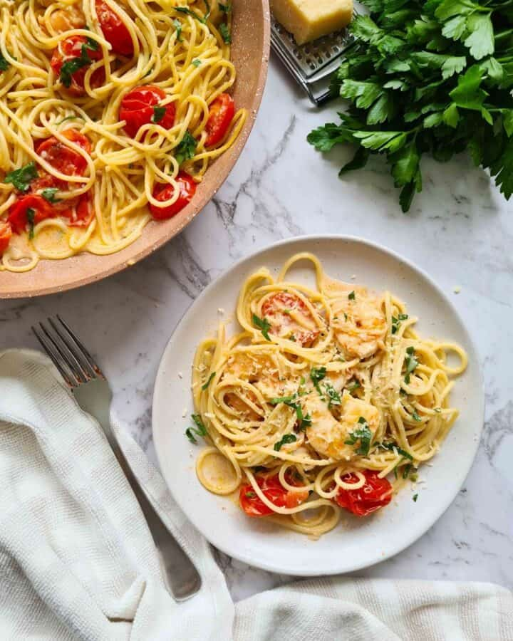

Creamy Garlic Prawn Pasta

Description
Pasta tossed with a garlic infused creamy sauce and plump, juicy prawns! (Shrimp) This pasta version of Creamy Garlic Prawns is a quick meal you'll get on the table in 20 minutes, this is luscious but it's not too rich. The key is to emulsify the sauce (i.e. thicken it) by tossing the pasta in the sauce just before serving. this is the proper Italian way to make pasta.
Ingredients
- 12 oz / 350g fettuccine , or other long strand pasta of choice
- 50 g / 3 tbsp unsalted butter , (separated)
- 500 g / 1 lb small or medium peeled prawns / shrimp , (raw or 1kg / 2 lb whole unpeeled (Note 1))
- 4 garlic cloves , (finely minced with a knife)
- 1/2 cup Chardonnay or other dry white wine (Note 2 for sub)
- 1 1/4 cups heavy / thickened cream (or regular cream, pouring cream etc, full fat (Note 3))
- 1/2 cup chicken broth (or fish or vegetable broth), preferably low sodium
- 3/4 cup (75 g) finely grated parmesan cheese (freshly grated) (Note 4)
- 2 tbsp finely chopped parsley , optional
- Black pepper
- Parmesan , for serving
Directions
- Cook pasta – Bring to boil a large pot of water. Add a big pinch of salt and the pasta, then cook per packet MINUS 1 minute – it will finish cooking in the sauce later so we want it slightly under. (Note 5).
- Reserve water – Just before draining, scoop out 1 cup of pasta cooking water and set aside, we need this to thicken the sauce later. Drain pasta.
- Lightly cook prawns in 2 batches – Meanwhile, melt about 1/3 of the butter in a large non stick skillet over medium high heat. Add half the prawns, spread out, and cook for 1 1/2 minutes, then turn and toss using 2 spatulas for another 1 – 1 1/2 minutes until just barely cooked (the prawns will cook more in the sauce). Remove prawns into a bowl. Repeat – add half the remaining butter, cook the remaining prawns then remove.
- Sauté garlic – In the same skillet, add the remaining butter. Once melted, add the garlic and stir for 20 seconds until fragrant (don't let it burn, lower heat it needed).
- Deglaze – Add wine and stir. Simmer rapidly for 2 minutes, scraping the pan to dissolve any bits stuck to it into the liquid, until wine mostly evaporates (see video).
- Sauce – Add cream, broth and parmesan. Stir until the parmesan is melted, then leave to simmer for 1 1/2 minutes until it thickens slightly – it will still be quite watery though which is fine, it will thicken more in next step.
- Toss & thicken sauce – Add prawns, pasta plus about 1/4 cup of reserved pasta water. Toss pasta energetically (still on stove on medium high) and in 1 to 2 minutes, the sauce will thicken and start clinging to the pasta. It will seem like nothing is happening at first but trust the process, it will happen! If you take it too far and the sauce gets too thick, add a small splash of remaining reserved pasta cooking water to loosen and toss again (you can do this repeatedly as needed).
- Finish – Add most of the parsley and a grind of black pepper, taste and check if you need salt (I don't need more), then give it a quick toss.
- Serve immediately, garnished with remaining parsley and parmesan if desired.
Home